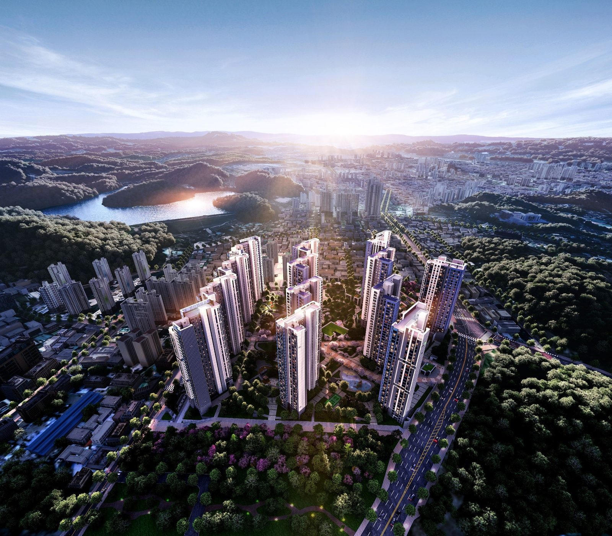
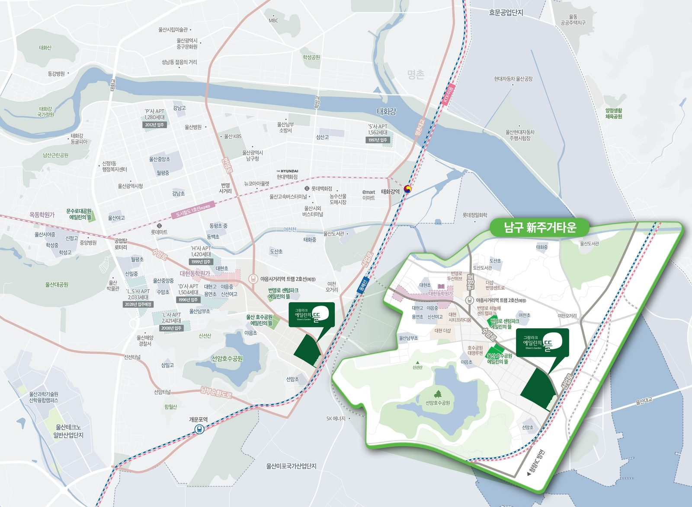
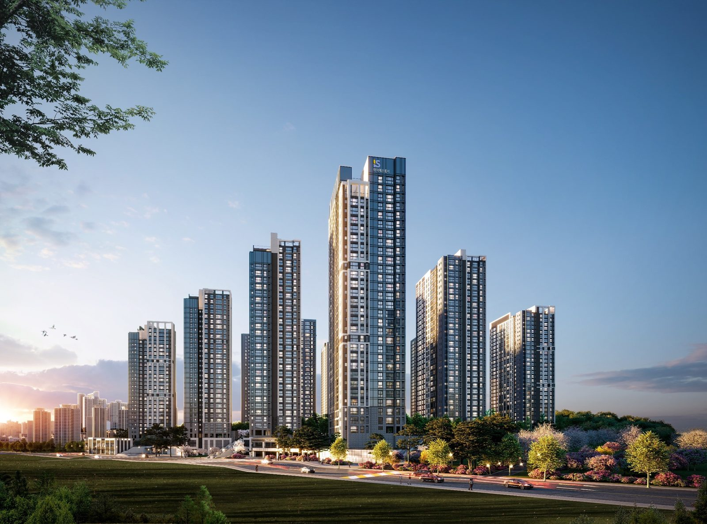
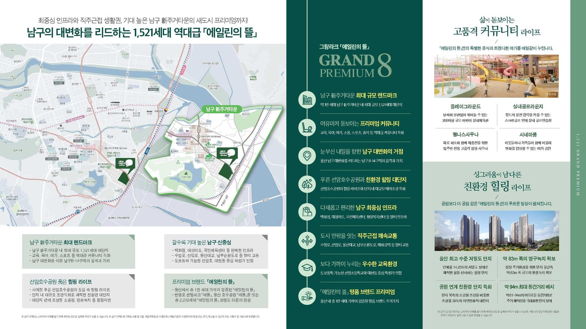

남구 야음동 B-14 재개발 구역에 들어서는 1,521세대 대단지입니다. 2026년 9월 청약을 마쳤고, 당첨자 발표와 계약이 이어집니다. 분양 자료와 청약홈 공고, 그리고 주변 실거래를 나란히 놓고 정리했습니다.
단지 개요
- 위치
- 울산광역시 남구 야음동 350-5번지 일원
- 일반분양
- 1,153세대
- 전체 세대
- 1,521세대
- 입주 예정
- 2029.11
- 시공
- 아이에스동서(주)
- 건축 규모 — 지하 2층 ~ 지상 30층, 13개 동
- 대지 면적 — 90,830.10㎡ (약 27,476평)
- 건폐율 · 용적률 — 14.25% · 239.30%
- 조경 면적 — 23,789.22㎡, 녹지율 36% (분양 자료)
- 동간 거리 — 최대 약 94m, 단지 쪽에 약 83m 폭의 완충녹지 (분양 자료)
- 시행 · 시공 — 남구B-14구역 주택재개발정비사업조합 · 아이에스동서
타입과 세대 구성
전용 59㎡ A·B·C, 74㎡, 84㎡, 102㎡ A·B 네 가지 크기입니다. 전체 1,521세대 가운데 조합원 몫과 임대(39㎡ 81세대)를 빼고 1,153세대가 일반분양으로 나왔습니다.
- 59㎡ — 전체 338세대 · 일반분양 255세대
- 74㎡ — 전체 174세대 · 일반분양 139세대
- 84㎡ — 전체 817세대 · 일반분양 709세대 (일반분양의 약 62%)
- 102㎡ — 전체 111세대 · 일반분양 50세대
청약 일정
- 입주자모집공고2026.09.02
- 특별공급2026.09.14
- 1순위2026.09.15
- 2순위2026.09.16
- 당첨자 발표2026.09.22
- 계약2026.10.06 ~ 10.08
청약홈 공고 기준 · 2026.09.22 현재
타입별 분양가 (청약홈 공고 · 최고가 기준)
| 타입 | 전용 | 공급 | 세대 | 최고 분양가 | 3.3㎡당 |
|---|---|---|---|---|---|
| 59A | 59.83㎡ | 83.71㎡ | 89 | 5억 7,600만원 | 2,275만원 |
| 59B | 59.99㎡ | 85.1㎡ | 114 | 5억 7,600만원 | 2,238만원 |
| 59C | 59.97㎡ | 83.55㎡ | 52 | 5억 6,600만원 | 2,239만원 |
| 74 | 74.83㎡ | 100.57㎡ | 139 | 6억 8,700만원 | 2,258만원 |
| 84 | 84.9㎡ | 111.02㎡ | 709 | 7억 6,600만원 | 2,281만원 |
| 102A | 102.88㎡ | 130.66㎡ | 29 | 8억 6,900만원 | 2,199만원 |
| 102B | 102.56㎡ | 132.19㎡ | 21 | 8억 5,000만원 | 2,126만원 |
청약홈 입주자모집공고 · 층·향별로 분양가가 다르며 표는 타입별 최고가입니다. 발코니 확장비·옵션은 따로입니다.
청약 결과 (경쟁률 · 당첨가점)
| 주택형 | 공급 | 1순위 경쟁률 | 당첨가점 |
|---|---|---|---|
| 59㎡A | 40세대 | 6.83 : 1 | 34~57점 (평균 43.19) |
| 59㎡B | 53세대 | 4.96 : 1 | 33~57점 (평균 39.41) |
| 59㎡C | 36세대 | 1.17 : 1 | 16~30점 (평균 22.13) |
| 74㎡ | 119세대 | 미달 9세대 | — |
| 84㎡ | 669세대 | 미달 384세대 | — |
| 102㎡A | 29세대 | 미달 16세대 | — |
| 102㎡B | 21세대 | 미달 19세대 | — |
청약홈 2026.09.22 발표 · 일반공급 총 접수 1,115건 · 경쟁률·당첨가점은 1순위 해당지역 기준 · 미달은 1·2순위를 모두 받고도 남은 세대입니다. 무순위·선착순으로 다시 나오는지는 청약홈 공고로 확인하세요.
당첨가점은 가점제(84점 만점 · 무주택 기간 + 부양가족 + 청약통장 기간)로 뽑힌 사람의 점수로, 최저 점수가 사실상 커트라인입니다. 일부 세대는 점수 없이 추첨으로 뽑습니다.
주변 시세와 나란히 보기
분양가만 봐서는 비싼지 싼지 알기 어렵습니다. 같은 야음동에서 최근 거래된 84㎡(33평) 아파트와 분양권 가격을 나란히 놓았습니다. 이 표는 국토교통부 실거래 자료로 매일 새로 채워집니다.
| 단지 | 준공 | 거래 | 평균 | 최고 | 최근 |
|---|---|---|---|---|---|
| 그랑라크 에일린의 뜰 84㎡ 분양가(최고) | 2029 입주 예정 | — | 7억 6,600만원 | — | — |
| 대현더샵 | 2018년 준공 | 29건 | 8억 5,574만원 | 9억 1,000만원 | 09.17 |
| 더샵번영센트로 | 2023년 준공 | 3건 | 8억 2,633만원 | 8억 4,000만원 | 05.09 |
| 힐스테이트수암(1단지) | 2019년 준공 | 27건 | 8억 148만원 | 8억 4,000만원 | 09.09 |
| 번영로하늘채센트럴파크 | 2022년 준공 | 18건 | 7억 5,883만원 | 8억 800만원 | 08.06 |
| 울산번영로두산위브 | 2017년 준공 | 27건 | 7억 2,170만원 | 7억 8,300만원 | 08.20 |
| 울산대현시티프라디움 | 2022년 준공 | 16건 | 7억 1,694만원 | 7억 4,250만원 | 09.15 |
| 힐스테이트수암(2단지) | 2019년 준공 | 2건 | 6억 9,250만원 | 7억 1,500만원 | 07.04 |
| 번영로센텀파크에일린의뜰 | 2024년 준공 | 2건 | 6억 4,250만원 | 6억 4,500만원 | 06.21 |
| 신선산아드리아 | 2020년 준공 | 3건 | 3억 2,167만원 | 3억 2,500만원 | 06.15 |
| 힐스테이트 선암호수공원 2단지 (분양권) | 입주 전 | 2건 | 9억 6,568만원 | 9억 7,053만원 | 07.28 |
| e편한세상 번영로 리더스포레 (분양권) | 입주 전 | 5건 | 8억 546만원 | 8억 6,677만원 | 09.14 |
| 번영로 하늘채 라크뷰 (분양권) | 입주 전 | 33건 | 7억 3,213만원 | 7억 7,518만원 | 09.09 |
| 울산 호수공원 에일린의 뜰 2단지 (분양권) | 입주 전 | 6건 | 7억 1,153만원 | 7억 2,980만원 | 06.20 |
| 울산 호수공원 에일린의 뜰 1단지 (분양권) | 입주 전 | 15건 | 7억 727만원 | 7억 2,730만원 | 09.15 |
남구 야음동 · 전용 83~86㎡ · 2026.03.23 ~ 2026.09.21 계약 · 2015년 이후 준공 아파트와 분양권 · 해제 거래 제외 · 국토교통부 실거래가
분양가는 발코니 확장비·옵션이 따로일 수 있어, 실제로 치르는 돈과 차이가 날 수 있습니다. 비교할 때는 모집공고의 확장비·옵션 금액까지 더해 보셔야 합니다.
입지

- 공원 — 선암호수공원이 가깝고, 울산대공원도 멀지 않습니다.
- 생활 — 롯데백화점 등 삼산·달동 상권과 대현동 생활권을 함께 씁니다.
- 교통 — 수암로·산업로·남부순환도로와 이어집니다. 산업로 쪽이라 현대자동차·SK 등 공단 출퇴근 동선이 짧은 편입니다(분양 자료).
- 주변 개발 — 분양 자료는 이 일대를 「야음 뉴타운」(야음 8·10·12·13지구 등 약 1만 세대 예정)으로 소개합니다. 지구별 사업은 아직 진행 중이라 일정이 바뀔 수 있습니다.
학교
- 초등학교 — 선암초등학교가 가깝습니다. 분양 자료에 따르면 그린스마트스쿨로 지정돼 2029년 하반기 개교(리모델링 준공) 예정입니다.
- 중·고등학교 — 야음중, 대현고·신선여고가 가깝고 대현동 학원가와 이어집니다.
- 중학교 배정 — 2027년부터 울산 중학교 배정 방식이 바뀝니다(학교군 희망 추첨 60% + 거리 40%, 분양 자료). 실제 배정 학교는 울산광역시교육청 공고로 꼭 확인하셔야 합니다.
커뮤니티와 단지 설계

분양 자료에 소개된 커뮤니티는 약 3,054평 규모입니다.
- 스포츠 — 피트니스, 실내골프·스크린골프, 사우나
- 교육 — 라이브러리, 스터디룸
- 키즈 — 어린이 실내 체육관(약 200평, 분양 자료에서 「울산 최초」로 소개), 키즈플레이룸, 물놀이터
- 문화 · 생활 — 시네마룸, 연회장, 게스트 레지던스, 런드리 라운지
외관은 유리 커튼월 느낌을 살린 설계와 야간 경관 조명을 적용한다고 합니다. 커뮤니티 구성과 규모는 분양 자료 기준이며 실제 시공 때 바뀔 수 있습니다.
이 구역이 걸어온 길
- 추진위 승인2006.07.27
- 정비구역 지정2008.05.15
- 조합설립 인가2015.12.08
- 사업시행 인가2019.06.28
- 관리처분 인가2021.01.22
- 청약(입주자모집공고)2026.09.02
울산시 도시정비사업 추진현황 · 청약홈
추진위원회 승인부터 청약까지 20년 가까이 걸린 구역입니다. 조합원 입주권이 있는 재개발 단지라 일반분양 외에 입주권 거래도 함께 이뤄집니다(7강 · 입주권과 분양권).
견본주택
- 견본주택 — 울산광역시 남구 삼산로 248
- 현장 — 울산광역시 남구 야음동 350-5 일원

정리
- 남구 신축 대단지(1,000세대 이상)로, 84㎡가 일반분양의 약 62%를 차지합니다.
- 84㎡ 분양가(최고가 기준)를 같은 야음동 신축급 아파트의 최근 거래와 비교해 보면 위치를 가늠할 수 있습니다.
- 학교 배정, 커뮤니티 규모, 주변 개발은 분양 자료 기준이라 확정 전 공고로 다시 확인하는 것이 좋습니다.
※ 이 글의 사진과 그림은 분양대행사(에스알디)가 제공한 홍보 자료입니다. 분양가·일정은 청약홈 입주자모집공고, 주변 시세는 국토교통부 실거래가 공개 자료를 기준으로 했습니다. 청약·계약 전에는 반드시 입주자모집공고 원문을 확인하세요.